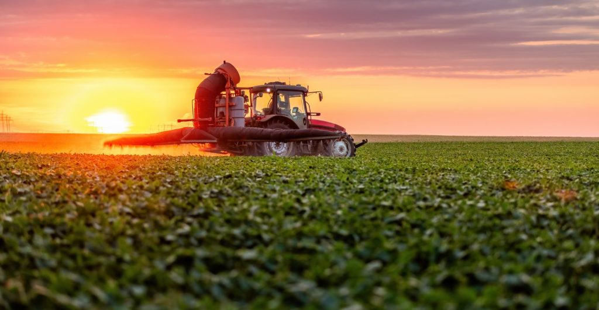
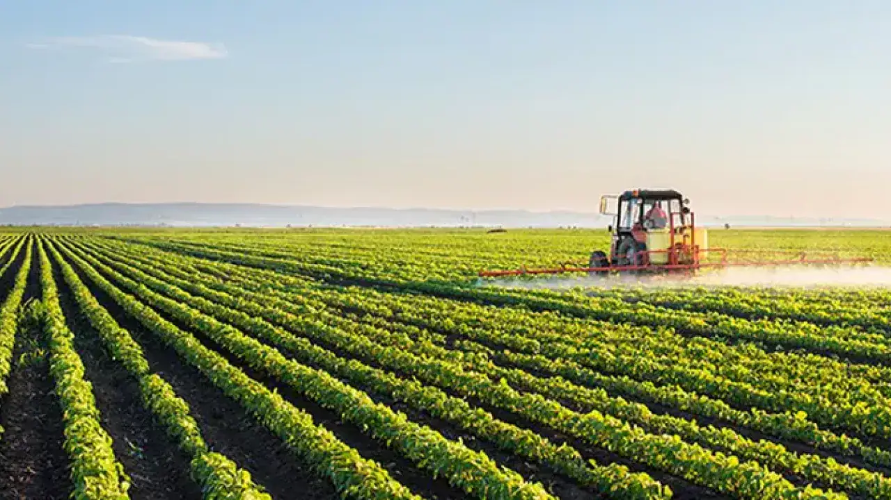
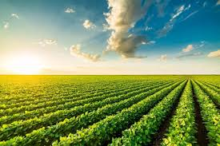

A Agricultura Profissional
A agricultura profissional é a prática de cultivar a terra focada na alta produtividade, eficiência de recursos e rentabilidade. Diferente da agricultura de subsistência, ela utiliza maquinários avançados, técnicas de manejo integrado e gestão empresarial rigorosa para abastecer mercados e indústrias, exigindo qualificação técnica contínua.

A agricultura possui uma longa história que remonta aos primórdios da civilização humana. Acredita-se que a origem da agricultura tenha ocorrido há cerca de 10.000 a 12.000 anos, durante a Revolução Neolítica.
Esse marco permitiu a transição de comunidades nômades para assentamentos permanentes, transformando profundamente a organização social e econômica da humanidade.
A agricultura surgiu em diferentes regiões do mundo de forma independente. No Crescente Fértil desenvolveram-se cultivos de trigo e cevada.
Na China destacaram-se o arroz e a soja. Nas Américas, os povos indígenas desenvolveram técnicas para cultivo de milho, feijão e batata.
No Brasil, a agricultura surgiu com os povos indígenas, que utilizavam técnicas como a roça de coivara para produção de mandioca, milho e outros alimentos.
Posteriormente, culturas como cana-de-açúcar e café impulsionaram o desenvolvimento econômico do país.

Importância da Agricultura
A importância da agricultura para a humanidade reflete-se na produção de alimentos para a sobrevivência e desenvolvimento das sociedades.
Além disso, a agricultura desempenha papel fundamental na economia, gerando empregos, movimentando cadeias produtivas e impulsionando o comércio nacional e internacional.
Formação e Qualificação
Não existem requisitos obrigatórios para se tornar agricultor, porém atenção, dedicação e sensibilidade aos detalhes do campo são diferenciais importantes.
Com a crescente inserção tecnológica no setor, o Ensino Médio, cursos técnicos agrícolas e graduações como Agronomia contribuem significativamente para o desenvolvimento profissional.

Interação com o Leitor